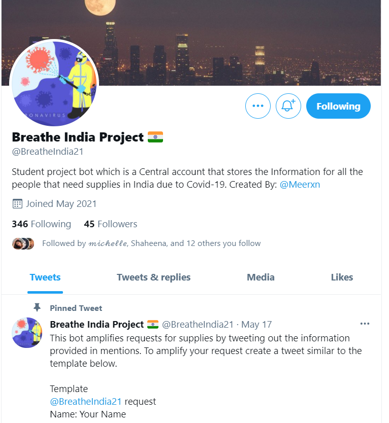
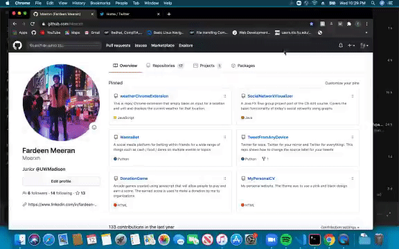
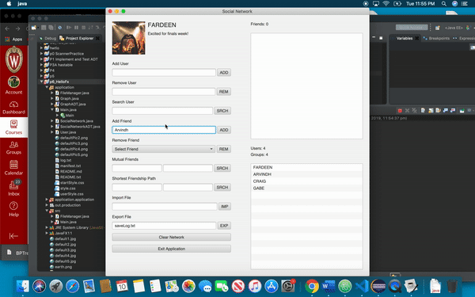
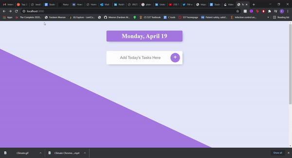

Projects
Breathe India Twitter Bot
Languages
Node.js and Twitter APIClimate Chrome Extension
Languages
Javascript, HTML and CSSSocial Network Visualizer
Languages
Java abd JavaFXTODO List Application
Languages
HTML, CSS, Node.js and ejsGoogle Doc Scraper